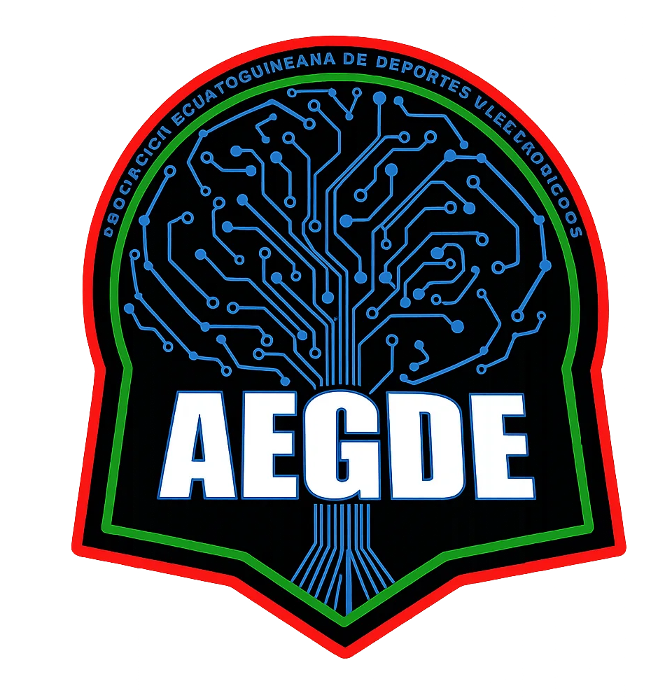

Tekken 8
Clasificatorios y ranking nacional.
Asociación Ecuatoguineana de Deportes Electrónicos
Organizamos torneos, formamos jugadores y representamos a Guinea Ecuatorial en la escena internacional de los deportes electrónicos.

Federación Internacional de Esports
Camerún, Gabón y Guinea Ecuatorial
Torneo LET × KEZA × AEGDE
Lucha, fútbol, naruto y más
La asociación
AEGDE no es solo un canal de contenido sobre videojuegos. Es la entidad que reúne a jugadores, clubes y organizadores para que competir en Guinea Ecuatorial tenga reglas, calendario y futuro.
Desde enero de 2025 organiza clasificatorios y rankings nacionales para identificar a los mejores jugadores del país. En marzo de ese mismo año la International Esports Federation incorporó a Guinea Ecuatorial a su directorio, con AEGDE como organización nacional representante. El Anuario Estadístico 2024 del INEGE ya recogía a la asociación entre las entidades deportivas del COGE.
El trabajo también pasa por la divulgación: jornadas sobre la evolución del videojuego y sus salidas profesionales, colaboraciones con el Instituto Francés de Malabo y torneos regionales junto a organizaciones de Camerún y Gabón.
Disciplinas
Torneos, clasificatorios y exhibiciones. El objetivo de cada enfrentamiento es el mismo: saber quién es el mejor jugador del país.
Clasificatorios y ranking nacional.
Disciplina del circuito regional.
Enfrentamientos y exhibiciones.
Formato competitivo a varias partidas.
Ultimate Ninja Storm Connections.
Propón el próximo torneo de la asociación.
Enviar propuestaTrayectoria
Fechas verificadas en fuentes públicas. La línea temporal se detiene en lo documentado, no en lo que nos gustaría contar.
Instituto Francés de Guinea Ecuatorial, Malabo. Evolución del medio, proyectos independientes y salidas profesionales, junto a la Fundación Identic.
Combates publicados con un objetivo explícito: determinar quién era el mejor jugador nacional.
La International Esports Federation anuncia la incorporación de cinco países, entre ellos Guinea Ecuatorial, con AEGDE como organización nacional. Membresía Associate, región África.
Torneo con Camerún, Gabón y Guinea Ecuatorial en tres disciplinas, clasificatorias en línea y finales presenciales en Libreville. 105.000 FCFA en premios.
Clasificatorias en Malabo y Bata, final nacional única y calendario anual publicado.
Hoja de ruta
Del torneo suelto al ecosistema permanente. Cada frente necesita aliados: instituciones, marcas y jugadores.
Competición anual con clasificatorias en Malabo, Bata y otras localidades, y una gran final nacional.
CompeticiónEquipos por disciplina para representar a Guinea Ecuatorial en citas internacionales.
RepresentaciónTalleres de competición, comunicación, streaming, creación de contenido y desarrollo de videojuegos.
FormaciónPaquetes comerciales para telecomunicaciones, tecnología, banca y marcas de consumo.
IndustriaRegistro de jugadores, rankings, calendario, resultados, torneos y noticias en un solo lugar.
ProductoAlianzas con asociaciones de Camerún, Gabón, Nigeria y el resto de África Central.
AlianzasComunidad
Contacto
Jugadores, clubes, marcas e instituciones: si quieres competir o apoyar el ecosistema, escríbenos.
asociacionegde@gmail.comDatos tomados del directorio de la IESF y de publicaciones públicas de la asociación.